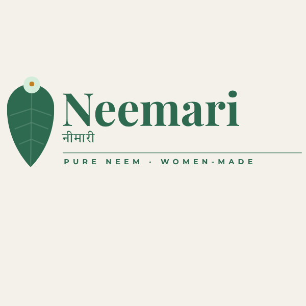
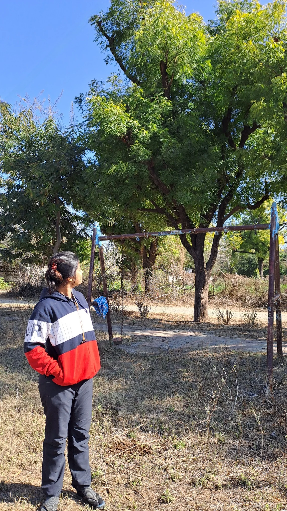
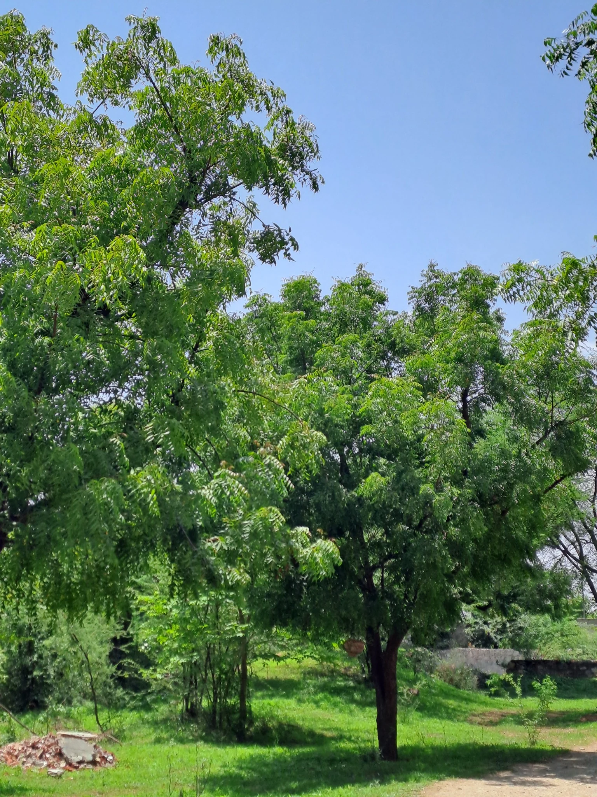
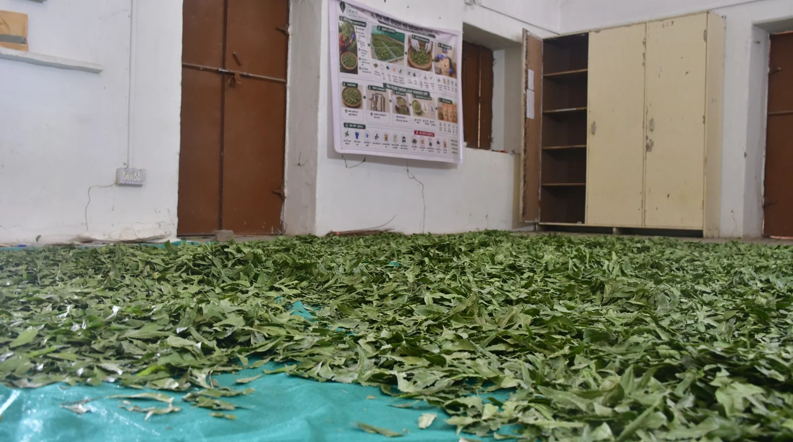
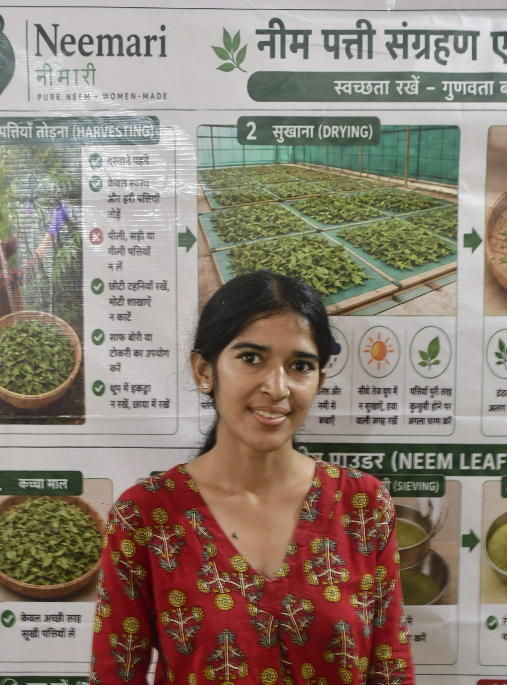
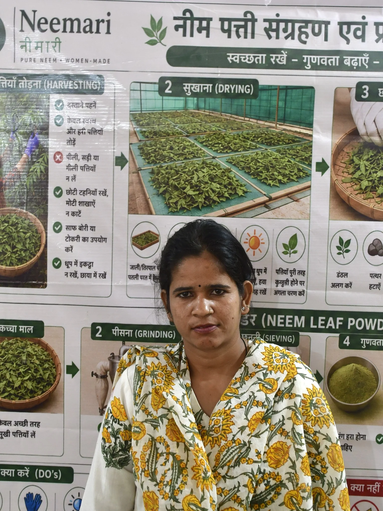

01 / POWDERPilot product
Neem leaf powder
Shade-dried leaves, pulverized and sieved. Explore two screen options for your sample.
₹249 / kgIndicative at 5 kg · bulk tiers available

WOMEN-LED · ROOTED IN TILONIA
The leaf, before the grind. Selected and shade-dried at Barefoot College, then hand sorted for buyer evaluation.

WHERE IT ALL BEGINS / TILONIA
OUR RESOURCE. OUR RESPONSIBILITY.
Harvesting to leaf powder, the process is managed by our own team at Barefoot College.
Neemari brings together campus tree access, local women’s skills and our processing space in Tilonia. We plan harvesting, separate the leaves, shade dry, grind, sieve and pack — keeping the work close to its source.
Mapped resource, not a guaranteed supply volume. Harvesting depends on permission, tree condition, season and measured yield.
Follow the processPure neem.
Women-made.
THE INGREDIENTS
Choose the material that fits your process. Explore its preparation, indicative pricing and the details to agree before supply.
Shade-dried leaves, pulverized and sieved. Explore two screen options for your sample.
₹249 / kgIndicative at 5 kg · bulk tiers available

02 / LEAVESPilot productSelected, cleaned and sorted leaf material for buyers who need the leaf before the grind.
₹35 / kgIndicative at 100 kg+ · cost approval needed
A seasonal supply route to discuss in advance. Current seed stock is not confirmed.
₹45 / kgIndicative · season, quality & yield apply
Nursery stock, quantity and seasonal readiness to confirm.
Proposed compost and future by-product enquiries. No tested formulation or available stock.
Catalogue indications, not confirmed offers. Sample acceptance, batch quality, stock, capacity and internal cost approval apply. Freight, requested tests and applicable taxes are separate.
| Buyer consideration | Leaf powder | Dried leaves | De-pulped seeds |
|---|---|---|---|
| Preparation | Shade dried, pulverized, sieved | Cleaned, shade dried, sorted | Seasonal de-pulped, sun-dried specification |
| Catalogue volume | 5 / 10 / 25 / 100 kg; custom enquiry | 100 kg+; smaller lots on request | 100 kg MOQ |
| Specification to agree | Screen, texture, moisture, tests | Leaf/stem tolerance, moisture, tests | Season, moisture, purity, tests |
| Commercial readiness | Pilot produced; release checks pending | Pilot produced; lot approval needed | Seasonal supply; stock unconfirmed |
| Batch test report | Not yet available in project records | Not yet available in project records | Not yet available in project records |
| Next step |
ONE TEAM. EVERY STAGE.
An end-to-end process managed at Barefoot College: tree access, people, drying space, equipment and batch handling. Tap a stage to see the work.
THE PEOPLE BEHIND NEEMARI
Built through practical work, patient learning and Barefoot College’s institutional and workshop support.
SBI Youth for India Fellow · 2025–26
Developed and facilitated the Neemari pilot at SWRC Barefoot College, bringing together production trials, equipment, training and buyer outreach.

PROCESSING TEAMNeemari processing team
Practical experience in leaf separation, drying, weighing, pulverizer operation, record keeping and packaging.

PROCESSING TEAMNeemari processing team
Practical experience in leaf separation, drying, weighing, pulverizer operation, record keeping and packaging.
A working pilot, with room to grow. The records updated on 22 October 2026 document operating capability and 6 kg of powder produced in the final reporting month. Testing was being arranged; no completed sales or buyer payments were reported through 19 October.
Supported by SWRC Barefoot College and developed through the SBI Youth for India Fellowship. Commercial supply depends on sample acceptance, testing arrangements and confirmed capacity.
START WITH YOUR REQUIREMENT
Choose a material, set your requirements and prepare a clear buyer brief. It’s a conversation starter — supply and terms need confirmation.
BEFORE WE BEGIN
A useful ingredient starts with an agreed specification.
No completed batch report or certification is available in the project records used here. Testing was being arranged. Buyer-specific tests may be discussed, with scope, laboratory, charges and lead time agreed first. Organic, chemical-free, food-grade, cosmetic-grade and medicinal claims are not made.
This private site prepares an enquiry brief. It does not accept payment, reserve stock or confirm orders. Live inventory, capacity and the authorized sales contact have not been provided. Any order needs a confirmed quotation and supplier acceptance.
The material indication follows the October 2026 catalogue and depends on accepted sample, grade, stock and capacity. Freight, requested laboratory testing and applicable taxes are separate. Pack size, payment terms and dispatch time must be agreed. Negotiated custom powder contracts may start from ₹169/kg only after capacity and cost approval; this is not a standing offer.
Pilot drying cycles varied, including approximately seven to ten days. Weather, airflow, layer thickness and the agreed dryness endpoint matter. These observations are not dispatch commitments. A supplier-confirmed production and testing schedule is needed for each order.
Share your intended use and written acceptance limits in the buyer brief. Moisture, fineness, foreign material, active compounds or other tests must be assessed for that intended use. A sample photograph or a sieve choice alone does not establish suitability or a regulated commercial grade.
Content is grounded in the Neemari final project report updated 22 October 2026, the 2026 trade catalogue with updated testing notes, the operating handbook and supplied project photographs. Operating and sales status is reported through 19 October unless a later update is stated. “Tilonia” follows the final report spelling; the place is also written “Tiloniya”.